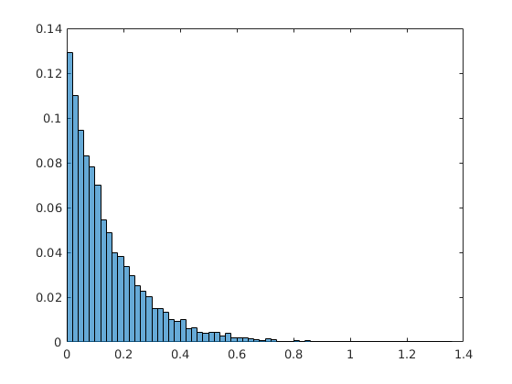

Contents
Stochastic modelling - worksheet one
% 20171121 - day two, afternoon, week two of MATLAB course
Section A - basic probability and random variables
% Q1a % generate random number from exp distribution % with parameter a = 7 % this is the mean parameter: a = 7; %random number generated x = rand(1) %now to generate the random number from the exponential distribution: randexp = a*(exp(-a*x))
x =
0.3978
randexp =
0.4322
Q 1 b
testing the results of Q1a:
sample = []; values = []; for i = 1:10000 x = rand(1); sample(i) = (1/a)*(log(1/x)); values(i) = x; end % now plot a histogram: histogram(sample,'Normalization','probability')
Q 1c
% compute mean and variance: sum = 0; for i = 1:length(sample) sum = sum + sample(i); end % result of my mean calculation: my_mean = sum / (length(sample)) % result from matlab function: mean(sample) % yes these results agree % variance % my calculation: my_var = 0; for i = 1:length(sample) my_var = my_var + ((sample(i)-my_mean)^2); end my_var my_std = my_var^(1/2) % result from matlab function: std(sample)
my_mean =
0.1444
ans =
0.1444
my_var =
202.8457
my_std =
14.2424
ans =
0.1424